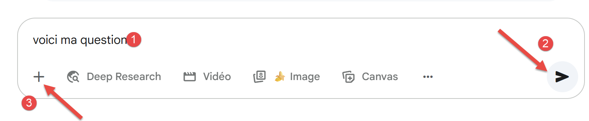
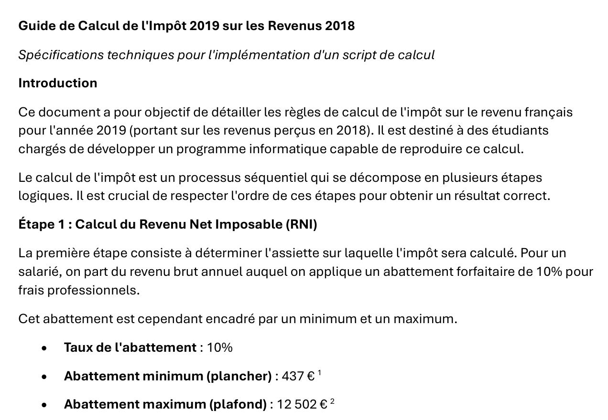
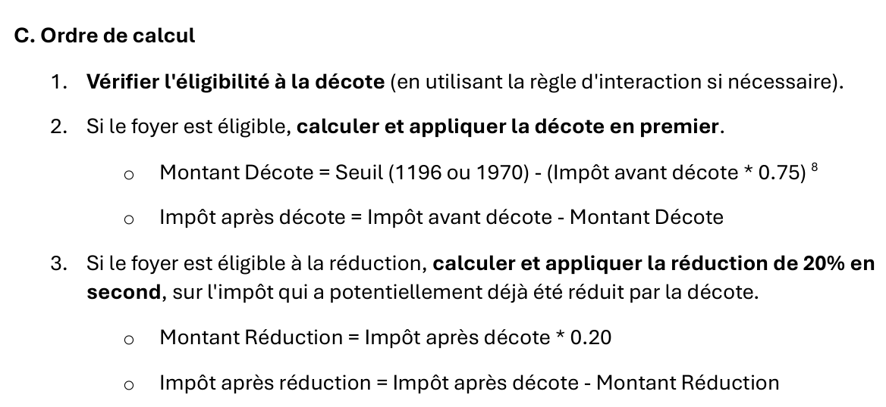
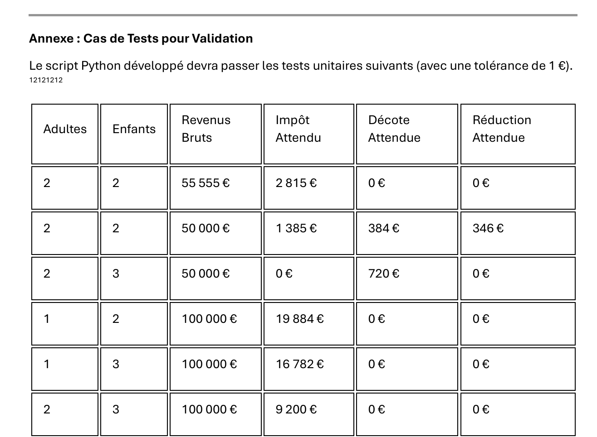

4. 使用 Google Gemini 解决三个问题
我们将展示三组成功解决上述问题的Gemini会话截图，并进行详细说明。完成这部分后，我们将不再重复其他已测试IA的流程，因其运作方式类似。仅列出关键细节。
4.1. 引言
回顾之前提供的第一张Gemini截图：
- 在 [1] 中，即 Gemini 的 URL；
- 在 [2] 中，所使用的 Gemini 版本；
- 在 [3-5] 中，向 Gemini 提出的三道问题；
Gemini是谷歌的一款产品，可在URL [https://gemini.google.com/]上使用。若要获取如上所述的问答会话记录，您需要创建一个账户。 此外，与所有其他经过测试的 IA 一样，Gemini 会限制您的提问数量和文件上传数量。当达到此限制时，会话将结束，并建议您稍后继续。由于在会话中途被迫中断相当令人沮丧，所以我订阅了该服务。 幸运的是，Gemini的首月订阅是免费的。对于其他同样存在这些限制的工具，即ChatGPT、MistralAI和ClaudeAI，我也采取了同样的订阅方式。 我订阅了一个月，但这次首月是需要付费的。使用Grok时我没有遇到任何限制。DeepSeek虽未声明限制，但有时会回复[Server busy]并中断会话。这相当于暗中设置了限制却不作说明。
下文中，我将把问答会话简称为“会话”。IA通常使用英语术语“chat”（聊天）或“conversation”（对话）。
Gemini的提问界面如下：
 |  |
- 在 [1] 中，您的提问；
- 在 [2] 中，用于启动 IA 以计算响应的图标；
- 在 [3-4] 中，您可以附加文件；
4.2. 问题 1
问题1的会话内容如下：
- 在 [1] 中，问题内容；
- 在 [2] 中，Gemini 的回答开头如下；
回答的后续内容如下：
该答案正确。其余五个 IA 也将以类似形式给出正确答案。
4.3. 问题2
4.3.1. 引言
在此回顾课程[python3-flask-2020]的初始问题。这是一段以TD形式提供给学生的文本。
上表用于计算纳税人仅申报工资收入这一简化情况下的税额。如注释（1）所示，按此计算出的税额是未考虑以下三种机制前的税额：
- 针对高收入群体的家庭商数上限；
- 针对低收入群体的减免和税额减免；
因此，税额计算包括以下步骤 [http://impotsurlerevenu.org/comprendre-le-calcul-de-l-impot/1217-calcul-de-l-impot-2019.php]：
本文旨在编写一个程序，用于计算2019年纳税人的应纳税额，具体针对仅需申报工资收入的简化案例。
4.3.1.1. 应纳税额计算
应纳税额可按以下方式计算：
首先计算纳税人的份额数：
- 每位父母计为1份；
- 前两名子女各计1/2份；
- 后续子女每人计1份：
因此份额总数为：
- nbParts=1+nbEnfants*0.5+(子女数-2)*0.5（若雇员未婚）；
- 若已婚，则nbParts=2+nbEnfants*0.5+(nbEnfants-2)*0.5；
- 其中 nbEnfants 为其子女数；
- 计算应税收入 R=0.9*S，其中 S 为年薪；
- 计算家庭商数 QF=R/nbParts；
- 根据以下数据（2019年）计算应纳税额 I：
9964 | 0 | 0 |
27519 | 0.14 | 1394.96 |
73779 | 0.3 | 5798 |
156244 | 0.4 | 13913.69 |
0 | 0.45 | 20163.45 |
每行有 3 个字段：champ1、champ2、champ3。 要计算税款 I，需查找满足 QF<=字段1 的第一行，并取该行的数值。例如，对于一名已婚且有两个孩子的员工，年薪 S 为 50000 欧元：
应税收入：R=0.9*S=45000
份额数：nbParts=2+2*0.5=3
家庭分额：QF=45000/3=15000
满足 QF<=field1 的第一行如下：
因此，税额 I 等于 0.14*R – 1394.96*nbParts=[0,14*45000-1394,96*3]=2115。税额向下四舍五入至整欧元。
如果从第一行开始，关系 QF<=champ1 成立，则税额为零。
如果 QF 满足关系 QF<=field1 从未成立，则使用最后一行中的系数。此处：
由此得出的应纳税额 I=0.45*R – 20163.45*nbParts。
4.3.1.2. 家庭商数上限
要判断家庭商数上限 QF 是否适用，需重新计算不含子女的应纳税额。仍以已婚、育有两名子女且年薪 S 为 50000 欧元的雇员为例：
应税收入：R=0.9*S=45000
分额数：nbParts=2（不再计入子女）
家庭分额：QF=45000/2=22500
满足 QF<=field1 的第一行如下：
因此，税额 I 等于 0.14*R – 1394.96*nbParts=[0,14*45000-1394,96*2]=3510。
与子女相关的最高收益：1551 * 2 = 3102 欧元
最低税额：3510-3102 = 408 欧元
前一段已计算出的2份税额（2115欧元）高于最低税额408欧元，因此此处不适用家庭税额上限。
一般而言，应纳税额为 (税额1, 税额2) 中的较大值，其中：
- [impôt1]：为包含子女计算的应纳税额；
- [impôt2]：是不计入子女的应纳税额，并减去与子女相关的最高抵扣额（此处为每半份1551欧元）；
4.3.1.3. 减免额的计算
仍以已婚且有两名子女、年薪S为50000欧元的雇员为例：
上一步计算出的应纳税额（2115欧元）低于已婚夫妇的2627欧元（单身人士为1595欧元）：因此适用减免。其计算方式如下：
减免额 = 阈值（已婚夫妇=1970/单身=1196）-0.75 × 应纳税额
减免额=1970-0.75*2115=383.75，四舍五入为384欧元。
新应纳税额=2115-384=1731欧元
计算减免额时需遵守两条规则（某些IA工具在此问题上曾遇到困难）：
4.3.1.4. 税额减免的计算
当金额低于一定门槛时，将对前文计算出的应纳税额进行20%的减免。2019年的门槛如下：
- 单身：21037欧元；
- 已婚夫妇：42074欧元；（上文示例中使用的37968欧元似乎有误）；
该门槛值需增加以下数值：3797 *（子女带来的半份数）。
仍以那位已婚、育有两名子女且年薪S为50000欧元的雇员为例：
- 其应税收入（45000欧元）低于门槛（42074+2*3797）=49668欧元；
- 因此他有权享受20%的减税：1731 * 0.2 = 346.2欧元（四舍五入为347欧元）；
- 纳税人的应纳税额为：1731-347=1384欧元；
4.3.1.5. 净税额计算
我们的计算到此为止：应缴净税额为1384欧元。实际上，纳税人还可以享受其他减免，特别是针对向公益或公共利益组织捐赠的减免。
4.3.1.6. 高收入人群的情况
我们之前的例子适用于大多数雇员的情况。然而，对于高收入人群，税款的计算方式有所不同。
4.3.1.6.1. 年度收入10%减免的上限
在大多数情况下，应税收入按以下公式计算：R=0.9*S，其中S为年薪。这被称为10%的减免。该减免设有上限。2019年：
- 减免额不得超过12502欧元；
- 不得低于437欧元；
以一名未婚且无子女、年薪为200000欧元的雇员为例：
- 10%的减免额为200,000欧元 > 12,502欧元。因此，减免额被调整为12,502欧元；
4.3.1.6.2. 家庭系数上限
假设出现第 |家庭系数上限| 段所述的家庭上限情况。以一对育有三个子女、年收入为100,000欧元的夫妇为例。重新梳理计算步骤：
- 10%的免税额为100000欧元 < 12502欧元。因此应税收入R为100000-10000=90000欧元；
- 该夫妇拥有nbParts=2+0.5×2+1=4个家庭份额；
- 因此其家庭分额为 QF = R / nbParts = 90000 / 4 = 22500 欧元；
- 其带子女的应纳税额I1为I1=0.14×90000-1394.96×4=7020欧元；
- 其无子女的应纳税额I2：
- QF=90000/2=45000欧元；
- I2=0.3×90000-5798×2=15404欧元；
- 家庭分额上限规则规定，子女带来的增益不得超过（1551×4个半份额）=6204欧元。但此处该数值为I2-I1=15404-7020=8384欧元，因此高于6204欧元；
- 因此，应纳税额重新计算为 I3=I2-6204=15404-6204=9200欧元；
- 由于 I3 > I1，因此将保留 I3 这一税额；
该夫妇既无免税额也无减免，最终应纳税额为9200欧元。
4.3.1.7. 官方数据
税款计算较为复杂。本文将通过以下示例进行说明。 结果来自税务部门的模拟器 |https://www3.impots.gouv.fr/simulateur/calcul_impot/2019/simplifie/index.htm|：
纳税人 | 官方结果 | 本文算法的结果 |
一对夫妇，育有2名子女，年收入55555欧元 | 税额=2815欧元 税率=14% | 应纳税额=2814欧元 税率=14% |
一对夫妇，育有2个孩子，年收入50000欧元 | 税额=1385欧元 减免额=384欧元 减免额=346欧元 税率=14% | 应纳税额=1384欧元 减免额=384欧元 减免额=347欧元 税率=14% |
一对夫妇，育有3个孩子，年收入50000欧元 | 税额=0欧元 减免额=720欧元 减免额=0欧元 税率=14% | 应纳税额=0欧元 折扣=720欧元 减免额=0欧元 税率=14% |
单身，育有2名子女，年收入100000欧元 | 税额=19884欧元 减免额=0欧元 减免=0欧元 税率=41% | 应纳税额=19884欧元 附加税=4480欧元 减免=0欧元 减免额=0欧元 税率=41% |
单身，育有3名子女，年收入100000欧元 | 应纳税额=16782欧元 减免额=0欧元 减免额=0欧元 税率=41% | 应纳税额=16782欧元 附加税=7176欧元 减免=0欧元 减免额=0欧元 税率=41% |
一对夫妇，育有3个孩子，年收入100000欧元 | 应纳税额=9200欧元 减免额=0欧元 减免额=0欧元 税率=30% | 应纳税额=9200欧元 附加税=2180欧元 减免=0欧元 减免额=0欧元 税率=30% |
一对夫妇，育有5个孩子，年收入100000欧元 | 应纳税额=4230欧元 减免额=0欧元 减免额=0欧元 税率=14% | 应纳税额=4230欧元 减免=0欧元 减免=0欧元 税率=14% |
单身无子女，年收入100000欧元 | 应纳税额=22986欧元 减免额=0欧元 减免额=0欧元 税率=41% | 应纳税额=22986欧元 附加费=0欧元 减免=0欧元 减免额=0欧元 税率=41% |
一对夫妇，育有2个孩子，年收入30000欧元 | 应纳税额=0欧元 减免额=0欧元 减免额=0欧元 税率=0% | 应纳税额=0欧元 折扣=0欧元 减免=0欧元 税率=0% |
单身无子女，年收入200000欧元 | 应纳税额=64211欧元 减免额=0欧元 减免额=0欧元 税率=45% | 应纳税额=64210欧元 附加税=7498欧元 减免=0欧元 减免额=0欧元 税率=45% |
一对夫妇，育有3个孩子，年收入200000欧元 | 应纳税额=42,843欧元 减免额=0欧元 减免额=0欧元 税率=41% | 应纳税额=42842欧元 附加税=17283欧元 减免=0欧元 减免额=0欧元 税率=41% |
上文所称的附加税，是指高收入者因以下两种情况而需额外缴纳的税款：
- 年度收入10%的免税额设有上限；
- 家庭系数的上限；
由于税务部门的模拟器未提供该指标，因此无法对其进行验证。
可以看出，该文档中的算法每次计算出的税额均较为准确，但存在1欧元的误差范围。该误差源于数值四舍五入。所有金额有时四舍五入至更高的一欧元，有时则四舍五入至更低的一欧元。 由于我并不了解官方规则，因此文档中算法的金额均进行了四舍五入：
- 折扣和减免金额向上取整至整欧元；
- 附加费和最终税额向下取整；
我们将让IA执行此税款计算。
4.3.2. Gemini会话配置
提交给Gemini的问题附带两个文件：
- 在[1]中，上述详细计算结果已被封装进PDF文件并提交给Gemini。Gemini将从中获取2018年收入2019年税款简易计算的确切规则；
- 在 [2] 中，包含我们的操作说明；
- 在 [3] 中用于启动 IA；
文本文件 [instructionsAvecPDF.txt] 中的操作说明如下：
| 1 - Exprime-toi en français.
2 - Peux-tu générer un script Python permettant de calculer l'impôt payé par les familles en 2019 sur leurs revenus de 2018.
3 - Tu t'aideras du document PDF que j'ai joint et qui explique les calculs à faire.
4 - Tu dois faire attention aux points suivants :
- plafonnement du quotient familial. Il y a des seuils à vérifier.
- calcul de la décote dans certains cas. Il y a des seuils à vérifier.
- calcul de la réduction de 20% dans certains cas. Il y a des seuils à vérifier.
- plafonnement de l'abattement de 10% sur les revenus annuels dans certains cas.
- tu considèreras que tous les revenus sont à déclarer pour le déclarant 1 même si le couple est marié.
5 - Tu ajouteras au script généré des tests unitaires pour les cas suivants.
Dans ces tests on appelle :
adultes :nombre d'adultes du foyer fiscal
enfants : nombre d'enfants du foyer fiscal
revenus : revenus nets annuels avant impôt, ç-à-d avant le 1er calcul de l'abattement.
impot : l'impôt à payer
decote :la décote éventuelle du foyer fiscal
reduction : la réduction de 20% pour les faibles revenus
Voici les 11 tests à vérifier. Ils ont tous été vérifiés manuellement sur le simulateur officiel
du calcul de l'impôt 2019 [https://www3.impots.gouv.fr/simulator/calcul_impot/2019/简体/index.html].
Si tu utilises ce simulateur les revenus doivent être associés au seul déclarant 1 dans le cas d'un couple, le déclarant 2 étant alors ignoré. Lorsqu'on répartit les revenus
sur deux déclarants, on n'obtient pas le même résultat.
On utilise la syntaxe (adultes, enfants, revenus) -> (impot, decote, reduction) pour dire que le script reçoit les entrées
(adultes, enfants, revenus) et produit les résultats (impot, decote, reduction)
test1 : (2,2,55555) -> (2815, 0, 0)
test2 : (2, 2, 50000) -> (1385, 384, 346)
test3 : (2,3,50000) -> (0, 720, 0)
test4: (1,2,100000) -> (19884, 0, 0)
test5: (1,3,100000) -> (16782, 0, 0)
test6 : (2, 3, 100000) -> (9200, 0, 0)
test7 : (2, 5, 100000) -> (4230, 0, 0)
test8 : (1, 0, 100000) -> (22986, 0, 0)
test9 : (2, 2, 30000) -> (0, 0, 0)
test10 : (1,0,200000) -> (64211, 0, 0)
test11 : (2, 3, 200000) -> (42843, 0, 0)
6 - Il peut y avoir des problèmes d'arrondis. Tu procèderas comme suit
- l'impôt à payer sera arrondi à l'euro inférieur,
- la décote sera arrondie à l'euro supérieur,
- la réduction de 20 % sera arrondie à l'euro supérieur.
- l'abattement de 10% sera arrondi à l'euro supérieur
Fais tous les tests unitaires à l'euro près à cause de ces éventuelles erreurs d'arrondi.
Ne cherche pas à avoir les valeurs exactes ci-dessus mais ces valeurs à 1 euro près.
7 - Evite de chercher sur internet. Le PDF que je te donne est correct.
Ne donne ton résultat que lorsque tu as passé les 11 tests unitaires avec succès.
8 - si l'un des tests échoue et que tu es bloqué, affiche ton raisonnement pour ce test
afin que je puisse t'aider.
9- Mets des commentaires détaillés dans le script que tu génères.
Mets le barème progressif dans une liste ou dictionnaire puis utilise cette liste ou dictionnaire
Mets les nombres en dur (nombres magiques) que tu utilises dans des constantes
Utilise des fonctions pour séparer les étapes du calcul.
Ecris le tout en français
9 - n'affiche pas le code généré à l'écran. Donne-moi simplement un lien pour le récupérer.
Si les tests unitaires échouent, je te donnerai les logs de l'exécution du script pour que
tu voies tes erreurs.
10 - si c'est possible, indique le temps en minutes et secondes que tu as mis pour produire
le script demandé.
|
这些指令是向Gemini提出大量问题后得出的结果。很快我们就意识到，如果想要得到想要的结果，IA必须非常严格。正是由于这些反复尝试，Gemini会话最终因超出限制而被终止。让我们来看看这些指令的后续内容：
- 第1行：要求对话使用法语。此提示针对DeepSeek，因其倾向于使用英语；
- 第3行：我们的需求；
- 第5行：要求IA使用我们给他的PDF；
- 第7-14行：一些有用的提示，特别是针对没有PDF的第3个问题。在计算税款时，有几个IA丢失了；
- 第15-44行：希望包含在生成的脚本中的11个单元测试。脚本生成后，将在PyCharm中运行，届时将验证这11个测试是否通过；
- 第 46-53 行：如果没有这些指令，IA 生成的单元测试会因要求精确结果而失败；
- 第55-56行：我指示IA不要访问互联网。最简单的解决方案是使用PDF；
- 第58-59行：IA没有遵循这一指令。当我发现测试失败时，不得不将其明确写入问题中；
- 第61-65行：我在此指定所需的Python脚本类型；
- 第67-69行：我更希望有一个链接来获取生成的脚本，因为在屏幕上显示代码需要时间。结果发现，大多数IA无法做到这一点。提供的链接无法正常工作；
- 第71-72行：我希望了解IA回答该问题所花费的时间。只有Gemini能提供这一信息。 其余的IA要么不响应该指令，要么给出毫无根据的数字，表明它们根本不理解该指令；
4.3.3. Gemini的回答
Gemini的首次回复如下：
- 在 [1-4] 中，Gemini 提供了指向 PDF 部分或其当前使用的指令文本文件的链接；
后续内容如下：
- 在 [1] 中，Gemini 声称已成功执行了 11 个单元测试。 大多数 IA 文件在问题 2 和问题 3 中都做出了同样的声明，但通常在加载生成的脚本时却无法运行。因此必须对这一声明保持警惕。对于 Gemini 而言，这一声明最终被证实是正确的；
- 在[2]中，有一个链接最终被证实无法访问；
- 在[3]中，只有Gemini给出了一个合理的执行时间；
因此链接 [2] 无法正常工作。我们将此情况告知 Gemini：
Gemini的回复：
- 在 [1] 中，这是 Gemini 生成的 Python 脚本；
我们将该脚本加载到 PyCharm 中并执行：
- 在 [1] 中，[gemini1] 是 Gemini 生成的脚本；
执行脚本时出现编译错误：
"C:\Program Files\Python313\python.exe" "C:/Program Files/JetBrains/PyCharm 2025.2.0.1/plugins/python-ce/helpers/pycharm/_jb_unittest_runner.py" --path "C:\Data\st-2025\dev\python\code\python-flask-2025-cours\outils ia\chatGPT\chatGPT1.py"
Testing started at 17:12 ...
Launching unittests with arguments python -m unittest C:\Data\st-2025\dev\python\code\python-flask-2025-cours\outils ia\chatGPT\chatGPT1.py in C:\Data\st-2025\dev\python\code\python-flask-2025-cours
Traceback (most recent call last):
File "C:\Program Files\JetBrains\PyCharm 2025.2.0.1\plugins\python-ce\helpers\pycharm\_jb_unittest_runner.py", line 38, in <module>
sys.exit(main(argv=args, module=None, testRunner=unittestpy.TeamcityTestRunner,
~~~~^^^^^^^^^^^^^^^^^^^^^^^^^^^^^^^^^^^^^^^^^^^^^^^^^^^^^^^^^^^^^^^^^^
buffer=not JB_DISABLE_BUFFERING))
^^^^^^^^^^^^^^^^^^^^^^^^^^^^^^^^
File "C:\Program Files\Python313\Lib\unittest\main.py", line 103, in __init__
self.parseArgs(argv)
~~~~~~~~~~~~~~^^^^^^
File "C:\Program Files\Python313\Lib\unittest\main.py", line 142, in parseArgs
self.createTests()
~~~~~~~~~~~~~~~~^^
File "C:\Program Files\Python313\Lib\unittest\main.py", line 153, in createTests
self.test = self.testLoader.loadTestsFromNames(self.testNames,
~~~~~~~~~~~~~~~~~~~~~~~~~~~~~~~~~~^^^^^^^^^^^^^^^^
self.module)
^^^^^^^^^^^^
File "C:\Program Files\Python313\Lib\unittest\loader.py", line 207, in loadTestsFromNames
suites = [self.loadTestsFromName(name, module) for name in names]
~~~~~~~~~~~~~~~~~~~~~~^^^^^^^^^^^^^^
File "C:\Program Files\Python313\Lib\unittest\loader.py", line 137, in loadTestsFromName
module = __import__(module_name)
File "C:\Data\st-2025\dev\python\code\python-flask-2025-cours\outils ia\chatGPT\chatGPT1.py", line 28, in <module>
[cite_start]
^^^^^^^^^^
NameError: name 'cite_start' is not defined
Process finished with exit code 1
Empty suite
- 第 30 行，编译错误。[cite_start] 是用于生成特定文本格式的标记；
我们将上述日志放入一个名为 [logs gemini1.txt] 的文件中，并将其提供给 Gemini：
Gemini的响应如下：
将该文件加载到 PyCharm 中，执行新脚本时会产生完全相同的错误。我们将此情况告知 Gemini，并再次提供执行日志：
Gemini的响应如下：
这次成功了。11个单元测试均通过。我们将结果告知Gemini：
Gemini 回应道：
Gemini生成的脚本遵循了文本文件[instructionsAvecPDF.txt]中的指令：
| # -*- coding: utf-8 -*-
"""
Script pour le calcul de l'impôt 2019 sur les revenus de 2018 en France,
basé sur les règles simplifiées fournies dans le document PDF.
"""
import math
import unittest
# --- CONSTANTES DE CALCUL POUR L'IMPÔT 2019 ---
# 所有数值均来自提供的文档 PDF。
# 年度收入10%免税额的上限
PLAFOND_ABATTEMENT_10_POURCENT = 12502.0
MINIMUM_ABATTEMENT_10_POURCENT = 437.0
# 2019年所得税税率表
# 结构：（税率区间上限、税率、每份扣除额）
BAREME_IMPOT_2019 = [
{"seuil": 9964, "taux": 0.0, "deduction_par_part": 0},
{"seuil": 27519, "taux": 0.14, "deduction_par_part": 1394.96},
{"seuil": 73779, "taux": 0.30, "deduction_par_part": 5798},
{"seuil": 156244, "taux": 0.41, "deduction_par_part": 13913.69},
{"seuil": float('inf'), "taux": 0.45, "deduction_par_part": 20163.45}
]
# 家庭系数上限
GAIN_MAX_DEMI_PART = 1551.0 # 每半份额额外免税额上限
# 减免门槛及金额
SEUIL_APPLICATION_DECOTE = {"celibataire": 1595.0, "couple": 2627.0}
SEUIL_CALCUL_DECOTE = {"celibataire": 1196.0, "couple": 1970.0}
# 20%减税的门槛
SEUIL_BASE_REDUCTION_20 = {"celibataire": 21037.0, "couple": 42074.0}
MAJORATION_SEUIL_REDUCTION_PAR_DEMI_PART = 3797.0
def calculer_nombre_parts(adultes: int, enfants: int) -> float:
"""
Calcule le nombre de parts fiscales du foyer.
- Chaque parent amène 1 part.
- Les deux premiers enfants amènent chacun 1/2 part.
- Les enfants suivants amènent une part chacun.
"""
if adultes not in [1, 2]:
raise ValueError("Le nombre d'adultes doit être 1 ou 2.")
parts = float(adultes)
if enfants > 0:
parts += 0.5 * min(enfants, 2)
if enfants > 2:
parts += 1.0 * (enfants - 2)
return parts
def calculer_revenu_imposable(revenus: float) -> float:
"""
Calcule le revenu net imposable après l'abattement de 10%.
Cet abattement est plafonné.
L'abattement est arrondi à l'euro supérieur.
"""
abattement_calcule = revenus * 0.1
# 免税额设有最低和最高限额
abattement = min(PLAFOND_ABATTEMENT_10_POURCENT, max(MINIMUM_ABATTEMENT_10_POURCENT, abattement_calcule))
# 题目要求将免税额四舍五入至最接近的整欧元
abattement_arrondi = math.ceil(abattement)
return revenus - abattement_arrondi
def calculer_impot_brut_base(revenu_imposable: float, nombre_parts: float) -> float:
"""
Calcule l'impôt brut selon le barème progressif.
"""
if nombre_parts <= 0:
return 0.0
quotient_familial = revenu_imposable / nombre_parts
tranche_applicable = None
for tranche in BAREME_IMPOT_2019:
if quotient_familial <= tranche["seuil"]:
tranche_applicable = tranche
break
# 若QF高于所有阈值，则采用最后一个税率档次
if tranche_applicable is None:
tranche_applicable = BAREME_IMPOT_2019[-1]
# 应纳税额计算公式
impot_brut = (revenu_imposable * tranche_applicable["taux"]) - (
tranche_applicable["deduction_par_part"] * nombre_parts)
return max(0.0, impot_brut)
def appliquer_plafonnement_qf(impot_brut_avec_enfants: float, revenu_imposable: float, adultes: int,
enfants: int) -> float:
"""
Applique le plafonnement du quotient familial si nécessaire.
L'impôt final ne peut être inférieur à l'impôt calculé sans les enfants,
diminué d'un gain maximal par demi-part.
"""
if enfants == 0:
return impot_brut_avec_enfants
# 不计入子女份额的税额计算
parts_sans_enfants = calculer_nombre_parts(adultes, 0)
impot_sans_enfants = calculer_impot_brut_base(revenu_imposable, parts_sans_enfants)
# 计算与子女相关的最高收益
parts_avec_enfants = calculer_nombre_parts(adultes, enfants)
demi_parts_enfants = (parts_avec_enfants - parts_sans_enfants) * 2
gain_maximal = demi_parts_enfants * GAIN_MAX_DEMI_PART
impot_minimal_plafone = impot_sans_enfants - gain_maximal
# 预扣税额取两项计算结果中的较高值
return max(impot_brut_avec_enfants, impot_minimal_plafone)
def appliquer_decote(impot_avant_decote: float, adultes: int) -> tuple[float, float]:
"""
Applique la décote si l'impôt est inférieur à certains seuils.
La décote est arrondie à l'euro supérieur.
"""
statut = "couple" if adultes == 2 else "celibataire"
seuil_application = SEUIL_APPLICATION_DECOTE[statut]
seuil_calcul = SEUIL_CALCUL_DECOTE[statut]
decote = 0.0
# 若税额低于适用门槛，则适用减免
if impot_avant_decote < seuil_application:
# 减免公式：起征点 - 0.75 * 税前税额
decote_calculee = seuil_calcul - (0.75 * impot_avant_decote)
# 四舍五入至下一整欧元
decote = math.ceil(decote_calculee)
# 减免额不得为负值，且不得超过应纳税额
decote = max(0.0, min(decote, impot_avant_decote))
impot_apres_decote = impot_avant_decote - decote
return impot_apres_decote, decote
def appliquer_reduction_20_pourcent(impot_avant_reduction: float, revenu_imposable: float, adultes: int,
enfants: int) -> tuple[float, float]:
"""
Applique la réduction de 20% sous condition de revenus.
La réduction est arrondie à l'euro supérieur.
"""
statut = "couple" if adultes == 2 else "celibataire"
seuil_base = SEUIL_BASE_REDUCTION_20[statut]
# 阈值随与子女相关的每半份免税额相应提高
parts_avec_enfants = calculer_nombre_parts(adultes, enfants)
parts_adultes = calculer_nombre_parts(adultes, 0)
demi_parts_enfants = (parts_avec_enfants - parts_adultes) * 2
seuil_final = seuil_base + (demi_parts_enfants * MAJORATION_SEUIL_REDUCTION_PAR_DEMI_PART)
reduction = 0.0
# 若应税收入低于门槛值，则适用减免
if revenu_imposable < seuil_final:
reduction_calculee = impot_avant_reduction * 0.20
# 四舍五入至更高整数欧元
reduction = math.ceil(reduction_calculee)
impot_apres_reduction = impot_avant_reduction - reduction
return max(0.0, impot_apres_reduction), reduction
def calculer_impot(adultes: int, revenus: float, enfants: int) -> dict:
"""
Orchestre le calcul complet de l'impôt net à payer.
"""
# 步骤1：计算应税收入
revenu_imposable = calculer_revenu_imposable(revenus)
# 步骤2：计算免税额数
nombre_parts = calculer_nombre_parts(adultes, enfants)
# 步骤 3：计算应纳税额
impot_brut_initial = calculer_impot_brut_base(revenu_imposable, nombre_parts)
# 步骤 4：应用上限 QF
impot_apres_plafonnement = appliquer_plafonnement_qf(impot_brut_initial, revenu_imposable, adultes, enfants)
# 步骤 5：适用折扣
impot_apres_decote, decote_calculee = appliquer_decote(impot_apres_plafonnement, adultes)
# 步骤 6：应用 20% 的折扣
impot_avant_arrondi_final, reduction_calculee = appliquer_reduction_20_pourcent(impot_apres_decote,
revenu_imposable, adultes, enfants)
# 步骤 7：将税额向下四舍五入至最接近的欧元
impot_final = math.floor(impot_avant_arrondi_final)
return {
"impot": impot_final,
"decote": decote_calculee,
"reduction": reduction_calculee
}
# --- TESTS UNITAIRES ---
# 使用提供的示例验证脚本
class TestCalculImpot2019(unittest.TestCase):
def _verifier_resultat(self, adultes, enfants, revenus, impot_attendu, decote_attendue, reduction_attendue):
"""Fonction utilitaire pour exécuter un test et vérifier les résultats à 1 euro près."""
resultat = calculer_impot(adultes=adultes, revenus=revenus, enfants=enfants)
self.assertAlmostEqual(resultat["impot"], impot_attendu, delta=1,
msg=f"Test ({adultes}, {enfants}, {revenus}): Impôt attendu {impot_attendu}, obtenu {resultat['impot']}")
self.assertAlmostEqual(resultat["decote"], decote_attendue, delta=1,
msg=f"Test ({adultes}, {enfants}, {revenus}): Décote attendue {decote_attendue}, obtenue {resultat['decote']}")
self.assertAlmostEqual(resultat["reduction"], reduction_attendue, delta=1,
msg=f"Test ({adultes}, {enfants}, {revenus}): Réduction attendue {reduction_attendue}, obtenue {resultat['reduction']}")
def test_cas_1(self):
# (2, 2, 55555) -> (2815, 0, 0)
self._verifier_resultat(2, 2, 55555, 2815, 0, 0)
def test_cas_2(self):
# (2, 2, 50000) -> (1385, 384, 346)
self._verifier_resultat(2, 2, 50000, 1385, 384, 346)
def test_cas_3(self):
# (2, 3, 50000) -> (0, 720, 0)
self._verifier_resultat(2, 3, 50000, 0, 720, 0)
def test_cas_4(self):
# (1, 2, 100000) -> (19884, 0, 0)
self._verifier_resultat(1, 2, 100000, 19884, 0, 0)
def test_cas_5(self):
# (1, 3, 100000) -> (16782, 0, 0)
self._verifier_resultat(1, 3, 100000, 16782, 0, 0)
def test_cas_6(self):
# (2, 3, 100000) -> (9200, 0, 0)
self._verifier_resultat(2, 3, 100000, 9200, 0, 0)
def test_cas_7(self):
# (2, 5, 100000) -> (4230, 0, 0)
self._verifier_resultat(2, 5, 100000, 4230, 0, 0)
def test_cas_8(self):
# (1, 0, 100000) -> (22986, 0, 0)
self._verifier_resultat(1, 0, 100000, 22986, 0, 0)
def test_cas_9(self):
# (2, 2, 30000) -> (0, 0, 0)
self._verifier_resultat(2, 2, 30000, 0, 0, 0)
def test_cas_10(self):
# (1, 0, 200000) -> (64211, 0, 0)
self._verifier_resultat(1, 0, 200000, 64211, 0, 0)
def test_cas_11(self):
# (2, 3, 200000) -> (42843, 0, 0)
self._verifier_resultat(2, 3, 200000, 42843, 0, 0)
if __name__ == '__main__':
print("Exécution des tests unitaires...")
unittest.main(argv=['first-arg-is-ignored'], exit=False)
# 计算器在具体案例中的使用示例
print("\n--- Exemple de calcul ---")
revenus_annuels = 50000
nombre_adultes = 2
nombre_enfants = 2
resultat_calcul = calculer_impot(adultes=nombre_adultes, revenus=revenus_annuels, enfants=nombre_enfants)
print(f"Pour un couple ({nombre_adultes} adultes) avec {nombre_enfants} enfants et {revenus_annuels}€ de revenus :")
print(f" - Impôt à payer : {resultat_calcul['impot']}€")
print(f" - Montant de la décote : {resultat_calcul['decote']}€")
print(f" - Montant de la réduction : {resultat_calcul['reduction']}€")
|
我没有验证过这段代码。既然这11个单元测试都通过了，我认为它“大概是正确的”。对于我自己的代码，除了验证这11个测试外，我没有做更多的事情。
4.4. 问题 3
问题3与问题2完全相同，唯一的区别在于不再向IA提供PDF（该文件原本提供了应遵循的计算规则）。
提交给Gemini的初始问题如下：
[1]中的指令文件与问题2几乎相同，但存在以下差异：
1 - Exprime-toi en français.
2 - Peux-tu générer un script Python permettant de calculer l'impôt payé par les familles en 2019 sur leurs revenus de 2018.
3 - Tu t'aideras des sources que tu trouveras sur internet. Dans ta réponse indique-moi ces sources.
4 - Tu dois faire attention aux points suivants :
…
- 在 [3] 题中，要求学生在互联网上查找 2018 年收入的 2019 年所得税计算规则。这道题比前一道题更难；
下面仅摘录Gemini首次回答的部分内容：
预估耗时合理。我们等待Gemini的回复已久。
与之前一样，Gemini提供了一个生成的脚本下载链接，但该链接无法访问。我们已向其反馈：
Gemini的回复：
我们将脚本以 [gemini2] 的名称上传至 PyCharm：
执行后……却无法运行。执行日志如下：
"C:\Program Files\Python313\python.exe" "C:/Program Files/JetBrains/PyCharm 2025.2.0.1/plugins/python-ce/helpers/pycharm/_jb_unittest_runner.py" --path "C:\Data\st-2025\dev\python\code\python-flask-2025-cours\outils ia\gemini\gemini2.py"
Testing started at 17:23 ...
Launching unittests with arguments python -m unittest C:\Data\st-2025\dev\python\code\python-flask-2025-cours\outils ia\gemini\gemini2.py in C:\Data\st-2025\dev\python\code\python-flask-2025-cours
Failure
Traceback (most recent call last):
File "C:\Data\st-2025\dev\python\code\python-flask-2025-cours\outils ia\gemini\gemini2.py", line 278, in test_cas_2
self.assertAlmostEqual(impot, 1385, delta=1)
~~~~~~~~~~~~~~~~~~~~~~^^^^^^^^^^^^^^^^^^^^^^
AssertionError: 1691 != 1385 within 1 delta (306 difference)
Error
Traceback (most recent call last):
File "C:\Data\st-2025\dev\python\code\python-flask-2025-cours\outils ia\gemini\gemini2.py", line 291, in test_cas_3
impot, _, _ = calculer_impot_final(2, 3, 50000)
~~~~~~~~~~~~~~~~~~~~^^^^^^^^^^^^^
File "C:\Data\st-2025\dev\python\code\python-flask-2025-cours\outils ia\gemini\gemini2.py", line 187, in calculer_impot_final
decote, impot_apres_decote = calculer_decote(impot_apres_plafonnement, adultes)
~~~~~~~~~~~~~~~^^^^^^^^^^^^^^^^^^^^^^^^^^^^^^^^^^^
File "C:\Data\st-2025\dev\python\code\python-flask-2025-cours\outils ia\gemini\gemini2.py", line 134, in calculer_decote
decote = seuil_decote - (impot_avant_decote * COFFICIENT_DECOTE)
^^^^^^^^^^^^^^^^^
NameError: name 'COFFICIENT_DECOTE' is not defined. Did you mean: 'COEFFICIENT_DECOTE'?
Error
Traceback (most recent call last):
File "C:\Data\st-2025\dev\python\code\python-flask-2025-cours\outils ia\gemini\gemini2.py", line 316, in test_cas_9
self._verifier_cas(2, 2, 30000, (0, 0, 0))
~~~~~~~~~~~~~~~~~~^^^^^^^^^^^^^^^^^^^^^^^^
File "C:\Data\st-2025\dev\python\code\python-flask-2025-cours\outils ia\gemini\gemini2.py", line 216, in _verifier_cas
impot_calcule, decote_calculee, reduction_calculee = calculer_impot_final(adultes, enfants, revenus)
~~~~~~~~~~~~~~~~~~~~^^^^^^^^^^^^^^^^^^^^^^^^^^^
File "C:\Data\st-2025\dev\python\code\python-flask-2025-cours\outils ia\gemini\gemini2.py", line 187, in calculer_impot_final
decote, impot_apres_decote = calculer_decote(impot_apres_plafonnement, adultes)
~~~~~~~~~~~~~~~^^^^^^^^^^^^^^^^^^^^^^^^^^^^^^^^^^^
File "C:\Data\st-2025\dev\python\code\python-flask-2025-cours\outils ia\gemini\gemini2.py", line 134, in calculer_decote
decote = seuil_decote - (impot_avant_decote * COFFICIENT_DECOTE)
^^^^^^^^^^^^^^^^^
NameError: name 'COFFICIENT_DECOTE' is not defined. Did you mean: 'COEFFICIENT_DECOTE'?
Ran 11 tests in 0.038s
FAILED (failures=1, errors=2)
Process finished with exit code 1
- 第 11 行，一项测试失败；
- 第25行、第42行：出现相同的编译错误；
我们将这些日志保存到文本文件中，并提交给Gemini：
Gemini的响应：
我们将脚本加载到 PyCharm 中并执行。又出现了错误。我们将此情况告知 Gemini，并再次附上执行日志：
Gemini的回复：
我们将这个新脚本加载到 PyCharm 中并执行。这次 11 个单元测试全部通过：
Gemini生成的代码如下：
| # -*- coding: utf-8 -*-
import math
import unittest
# ==============================================================================
# CONSTANTES POUR 该IMPOSITION DES REVENUS 2018 (PAYÉE EN 2019)
# ==============================================================================
BAREME_IMPOT_2019 = [
{'seuil': 0, 'taux': 0.0},
{'seuil': 9964, 'taux': 0.14},
{'seuil': 27519, 'taux': 0.30},
{'seuil': 73779, 'taux': 0.41},
{'seuil': 156244, 'taux': 0.45},
]
ABATTEMENT_FORFAITAIRE_TAUX = 0.10
ABATTEMENT_FORFAITAIRE_MINIMUM = 437
ABATTEMENT_FORFAITAIRE_PLAFOND = 12502
PLAFONNEMENT_AVANTAGE_QF_DEMI_PART = 1551
SEUIL_DECOTE_CELIBATAIRE = 1196
SEUIL_DECOTE_COUPLE = 1970
COEFFICIENT_DECOTE = 0.75
TAUX_REDUCTION_20_POURCENT = 0.20
SEUIL_RFR_REDUCTION_CELIBATAIRE = 18985
SEUIL_RFR_REDUCTION_COUPLE = 37970
MAJORATION_RFR_REDUCTION_PAR_DEMI_PART = 3803
# ==============================================================================
# FONCTIONS DE CALCUL
# ==============================================================================
def calculer_nombre_parts(adultes: int, enfants: int) -> float:
"""Calcule le nombre de parts du foyer fiscal."""
if adultes < 1: return 0
parts = float(adultes)
if enfants >= 1: parts += 0.5
if enfants >= 2: parts += 0.5
if enfants >= 3: parts += (enfants - 2) * 1.0
return parts
def calculer_revenu_imposable(revenus_bruts: float) -> float:
"""Calcule le revenu net imposable après abattement de 10%."""
if revenus_bruts == 0: return 0.0
abattement = revenus_bruts * ABATTEMENT_FORFAITAIRE_TAUX
if abattement < ABATTEMENT_FORFAITAIRE_MINIMUM: abattement = ABATTEMENT_FORFAITAIRE_MINIMUM
if abattement > ABATTEMENT_FORFAITAIRE_PLAFOND: abattement = ABATTEMENT_FORFAITAIRE_PLAFOND
abattement = math.ceil(abattement)
revenu_imposable = revenus_bruts - abattement
return revenu_imposable if revenu_imposable > 0 else 0
def calculer_impot_brut_par_tranche(revenu_imposable: float, nombre_parts: float) -> float:
"""Calcule l'impôt brut en appliquant le barème progressif."""
if nombre_parts <= 0 or revenu_imposable <= 0: return 0.0
quotient_familial = revenu_imposable / nombre_parts
impot_par_part = 0.0
for i in range(len(BAREME_IMPOT_2019)):
tranche = BAREME_IMPOT_2019[i]
seuil_actuel = tranche['seuil']
taux = tranche['taux']
if quotient_familial > seuil_actuel:
base_imposable_tranche = 0
if i < len(BAREME_IMPOT_2019) - 1:
seuil_suivant = BAREME_IMPOT_2019[i + 1]['seuil']
base_imposable_tranche = min(quotient_familial, seuil_suivant) - seuil_actuel
else:
base_imposable_tranche = quotient_familial - seuil_actuel
impot_par_part += base_imposable_tranche * taux
return impot_par_part * nombre_parts
def appliquer_plafonnement_qf(revenu_imposable: float, nombre_parts: float, adultes: int,
impot_brut_famille: float) -> float:
"""Applique le plafonnement des effets du quotient familial."""
if nombre_parts <= adultes: return impot_brut_famille
impot_base = calculer_impot_brut_par_tranche(revenu_imposable, float(adultes))
demi_parts_enfants = (nombre_parts - adultes) * 2
avantage_qf_max = PLAFONNEMENT_AVANTAGE_QF_DEMI_PART * demi_parts_enfants
avantage_qf_reel = impot_base - impot_brut_famille
if avantage_qf_reel > avantage_qf_max:
return impot_base - avantage_qf_max
return impot_brut_famille
def calculer_impot_final(adultes: int, enfants: int, revenus: float) -> (int, int, int):
"""Orchestre le calcul complet de l'impôt."""
revenu_imposable = calculer_revenu_imposable(revenus)
nombre_parts = calculer_nombre_parts(adultes, enfants)
impot_brut = calculer_impot_brut_par_tranche(revenu_imposable, nombre_parts)
impot_apres_plafonnement = appliquer_plafonnement_qf(revenu_imposable, nombre_parts, adultes, impot_brut)
# CORRECTION：如果税额已为0，则不享受折扣或减免。
if impot_apres_plafonnement == 0:
return 0, 0, 0
# --- LOGIQUE CORRIGÉE POUR L'INTERACTION DÉCOTE / RÉDUCTION ---
decote_calculee = 0.0
reduction_calculee = 0.0
impot_a_traiter = impot_apres_plafonnement
# 1. 确定是否符合20%折扣的资格
est_eligible_reduction = False
if adultes >= 2:
seuil_rfr = SEUIL_RFR_REDUCTION_COUPLE + max(0, (nombre_parts - 2) * 2) * MAJORATION_RFR_REDUCTION_PAR_DEMI_PART
else:
seuil_rfr = SEUIL_RFR_REDUCTION_CELIBATAIRE + max(0, (
nombre_parts - 1) * 2) * MAJORATION_RFR_REDUCTION_PAR_DEMI_PART
if revenu_imposable < seuil_rfr:
est_eligible_reduction = True
# 2. 确定折扣资格
seuil_decote_foyer = SEUIL_DECOTE_COUPLE if adultes >= 2 else SEUIL_DECOTE_CELIBATAIRE
reduction_theorique = math.ceil(impot_a_traiter * TAUX_REDUCTION_20_POURCENT) if est_eligible_reduction else 0
if (impot_a_traiter - reduction_theorique) < seuil_decote_foyer:
decote_calculee = seuil_decote_foyer - (impot_a_traiter * COEFFICIENT_DECOTE)
decote_calculee = math.ceil(decote_calculee)
# CORRECTION：返还的折扣金额不得超过其抵消的税额
decote_calculee = min(decote_calculee, math.ceil(impot_a_traiter))
impot_a_traiter -= decote_calculee
impot_a_traiter = max(0.0, impot_a_traiter)
# 3. 若符合条件，则应用20%的减免
if est_eligible_reduction:
reduction_calculee = math.ceil(impot_a_traiter * TAUX_REDUCTION_20_POURCENT)
impot_a_traiter -= reduction_calculee
impot_a_traiter = max(0.0, impot_a_traiter)
impot_final = math.floor(impot_a_traiter)
return impot_final, int(decote_calculee), int(reduction_calculee)
# ==============================================================================
# TESTS UNITAIRES
# ==============================================================================
class TestCalculImpot2019(unittest.TestCase):
def _verifier_cas(self, adultes, enfants, revenus, attendu):
impot_attendu, decote_attendue, reduction_attendue = attendu
impot_calcule, decote_calculee, reduction_calculee = calculer_impot_final(adultes, enfants, revenus)
self.assertAlmostEqual(impot_calcule, impot_attendu, delta=1, msg=f"Impôt ({impot_calcule} vs {impot_attendu})")
self.assertAlmostEqual(decote_calculee, decote_attendue, delta=1,
msg=f"Décote ({decote_calculee} vs {decote_attendue})")
self.assertAlmostEqual(reduction_calculee, reduction_attendue, delta=1,
msg=f"Réduction ({reduction_calculee} vs {reduction_attendue})")
def test_cas_1(self): self._verifier_cas(2, 2, 55555, (2815, 0, 0))
def test_cas_2(self): self._verifier_cas(2, 2, 50000, (1385, 384, 346))
def test_cas_3(self): self._verifier_cas(2, 3, 50000, (0, 720, 0))
def test_cas_4(self): self._verifier_cas(1, 2, 100000, (19884, 0, 0))
def test_cas_5(self): self._verifier_cas(1, 3, 100000, (16782, 0, 0))
def test_cas_6(self): self._verifier_cas(2, 3, 100000, (9200, 0, 0))
def test_cas_7(self): self._verifier_cas(2, 5, 100000, (4230, 0, 0))
def test_cas_8(self): self._verifier_cas(1, 0, 100000, (22986, 0, 0))
def test_cas_9(self): self._verifier_cas(2, 2, 30000, (0, 0, 0))
def test_cas_10(self): self._verifier_cas(1, 0, 200000, (64211, 0, 0))
def test_cas_11(self): self._verifier_cas(2, 3, 200000, (42843, 0, 0))
if __name__ == '__main__':
print("Lancement des tests unitaires pour le calcul de l'impôt 2019...")
unittest.main(argv=['first-arg-is-ignored'], exit=False)
|
我再次没有检查这段代码。我只是注意到它成功通过了全部11个测试。
但人们可能会好奇其推理过程，特别是针对税额计算的特殊情况。于是我们向它询问：
这是一个高收入案例，既可能存在10%免税额的上限，也可能存在家庭系数的上限。
Gemini的回答如下：
最后这两张截图很有意思。Gemini 使用的计算方法与 PDF 中解释的方法不同。实际上，这种计算方法在互联网上也能找到。这两种方法是等效的。
该解释以其清晰度而著称。我们可以将其原样提供给学生，用以讲解税款计算方法。
现在我们来看另一个例子，这次涉及低收入群体。在这种情况下，可能会有减免和减税：
Gemini的回答如下：
这里可以看到，Gemini应用了一条PDF中没有的规则。它可能是在网上找到的，但来源可靠吗？
在此处，Gemini 继续应用一条未知规则（即上文提到的特殊规则）。
因此，Gemini的结果与官方税务模拟器的结果一致。但它使用了一条PDF中未包含的规则。错误出在哪里？我们向它询问，并附上了PDF：
Gemini的回复：
我认为 Gemini 是对的，而我的 PDF 是有误的。为了验证这一点，我请他进行测试：
- 其推导结果应与官方税务模拟器一致；
- PDF的推算结果与模拟器不同；
Gemini的回答如下：
这里Gemini的判断是错误的。我用这个例子运行了模拟器，结果如下：
不过，我们将发现 Gemini 的推理确实得出了上述结果。继续：
很好。记下了。继续：
因此，Gemini得出的结果是（税额、折扣、减免额）=（431、325、1296），而我使用的模拟器得出的结果是（431、324、1297）。也就是说，Gemini得出的结果与正确值仅相差1欧元，但它自己并不知道。我们告诉它：
Gemini 回复：
现在，我们想知道Gemini能否生成一个修正后的PDF：
Gemini的回答：
因此，Gemini 并没有给我一个指向 PDF 的链接，而是生成了一个文本，让我自己生成这个 PDF。 尽管在此提供 PDF 的截图会显得冗长，但我还是这样做，以便读者能看到 IA 的生成特性：







老实说，我并没有核实PDF中所述内容是否属实。无论如何，这是一份完美的TD文档，仅需几秒钟即可生成。
不过，我们可以让Gemini自己验证一下它的PDF是否正确。我们开始一个新的对话：
- 在 [1] 中，我们放入了由 Gemini 生成的 PDF [Le problème selon Gemini.pdf]；
- 在 [2] 中， [instructionsAvecPDF2.txt] 与 [instructionsAvecPDF.txt] 的指令完全相同，只是增加了一个第十二个单元测试，正是这个测试揭示了最初的 PDF 存在错误：
| test12 : (2, 2, 49500) -> (1297, 431, 324)
|
奇怪的是，Gemini 经过多次迭代才最终生成正确的脚本：
问题 2
问题 3
正如之前多次操作那样，当生成的脚本加载到 PyCharm 时出现错误，我们会将执行日志的文本文件提供给 Gemini。Gemini 能很好地理解这些日志。
问题 4
问题 5
问题 6 及结束
现在，我们确信Gemini生成的PDF是有效的。其中给出的计算规则是正确的。
接下来我们将对其余五个IA进行同样的验证，但解释将非常简短，仅针对当前领先的ChatGPT和IA进行详细说明。 我们关注的是IA能否解决我们提出的三个问题。事实上，所有这些IA的交互界面非常相似，我对它们的处理方式与Gemini一致。 建议读者尝试用自己选择的IA重新进行Gemini对话。